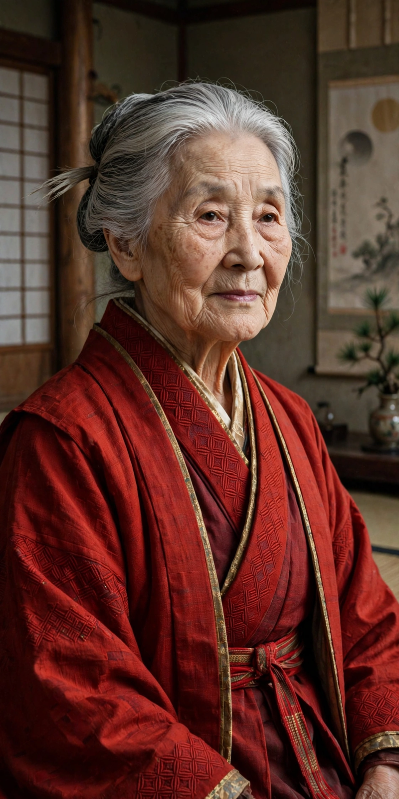

Miki Nakayama

Nakayama Miki (中山 みき, 18 April 1798 – 26 January 1887) was a Japanese religious leader, the founder of Tenrikyo, one of the earliest of the Japanese new religions. Followers revere her as the Shrine of God (Oyagami no yashiro) and refer to her as Oyasama, "the Foundress".
Life
Miki was born into a farming family in Sanmaiden Village (now Tenri, Nara Prefecture) and married into the Nakayama family, prosperous farmers and village officials. In 1838, during a Shugendo exorcism rite for her son's illness, she underwent a possession experience in which, Tenrikyo teaches, God the Parent (Tenri-O-no-Mikoto) descended into her. She progressively gave away the family's possessions, an act followers call "falling into poverty" (ochibureru), and began teaching a doctrine centred on the Joyous Life, salvation through the Service dance, and safe childbirth and healing.
Teachings and writings
Persecuted periodically by local authorities, Nakayama composed the movement's scriptures, including the Ofudesaki ("Tip of the Writing Brush", 1869–1882) and the songs of the Mikagura-uta. She taught that human beings are lent their bodies by God the Parent and that sufferings arise from "dusts" of the mind, to be swept away through sincere devotion. Tenrikyo holds that she withdrew from physical life in 1887 but remains everliving at the Jiba in Tenri, where the faith's central sanctuary stands.
See also: Japanese new religions, Shinto